Tsuno, Kochi: things to do, food and stays
Tsuno · Kochi
Tsuno
Highlighted on the Kochi map.
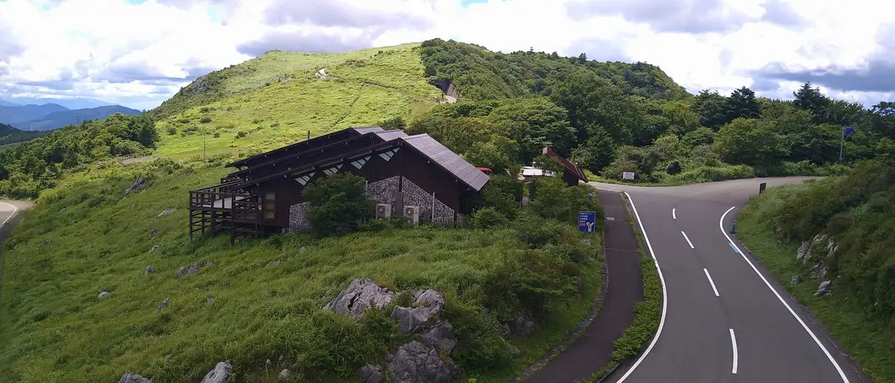
Stay
星ふるヴィレッジＴＥＮＧＵ
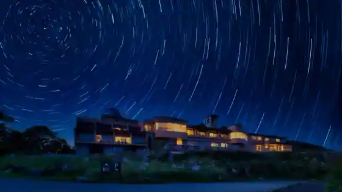
Hoshi Furu Virejji TENGU
Inn in Yoshionootsu, Tsuno with parking and scenic views; 80-minute drive from Susakihigashi IC.
遊山四万十 せいらんの里
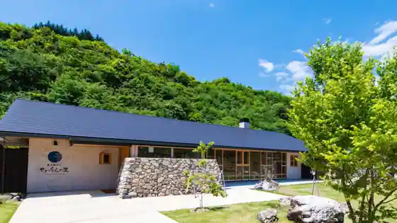
Yuzan Shimanto Seiranno Sato
四万十源流癒しの里 郷麓温泉
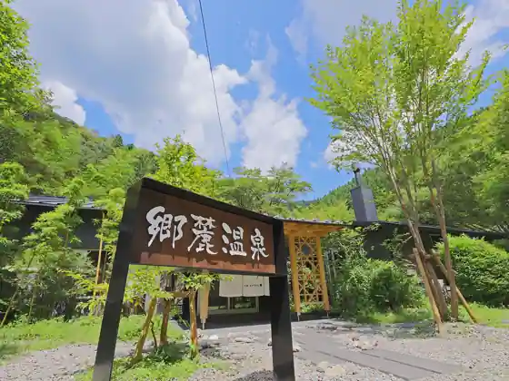
Shimanto Genryu Iyashi No Sato Sato Fumoto Onsen
Inn at Satofumoto Onsen in Kitagawa, Tsuno.
Dining
道の駅 布施ヶ坂
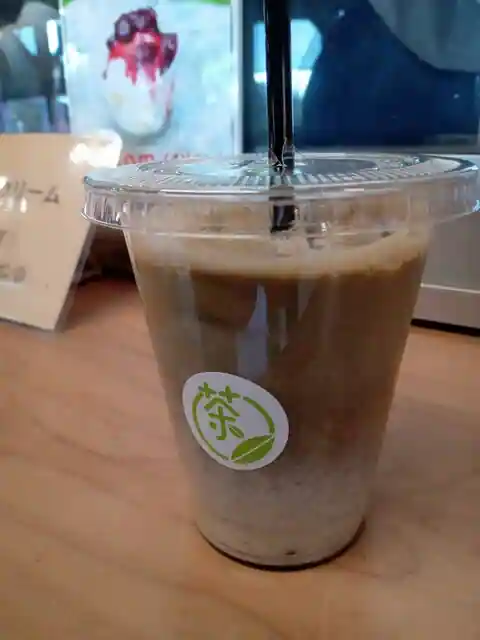
Michi No Eki Fuse Ke Saka
星ふるヴィレッジTENGU
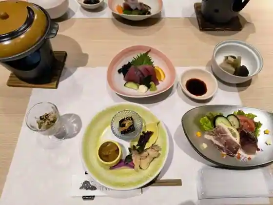
Hoshi Furu Virejji TENGU
郷麓温泉
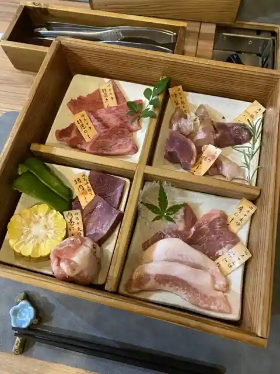
Sato Fumoto Onsen
満天の星
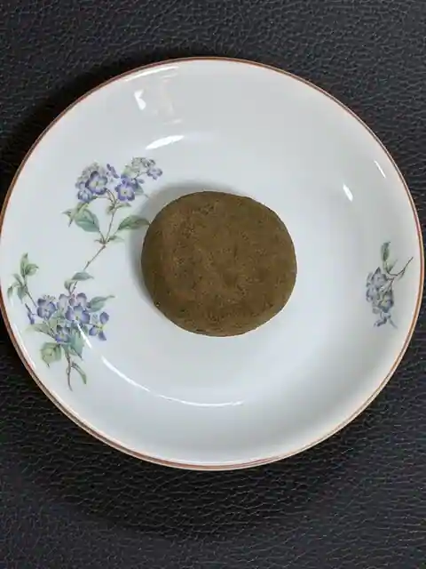
Manten No Hoshi
自由軒 葉山店
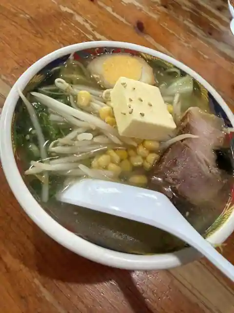
Jiyu Ken Hayama
山賊茶屋
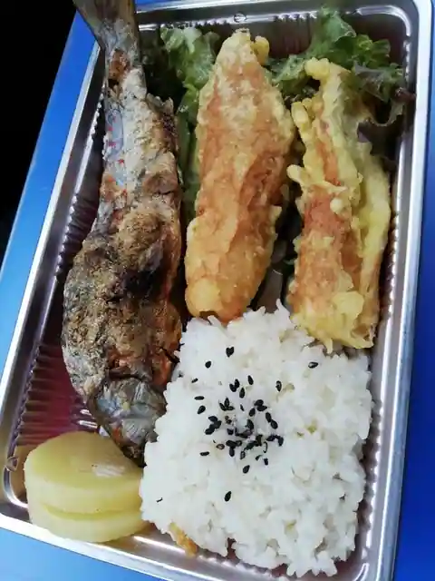
Sanzoku Chaya
You Farm
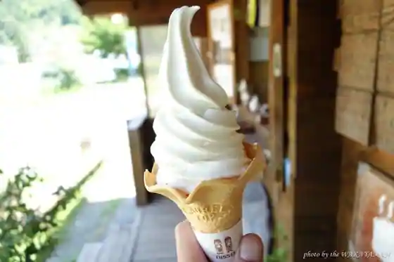
You Farm
カルストテラスカフェ
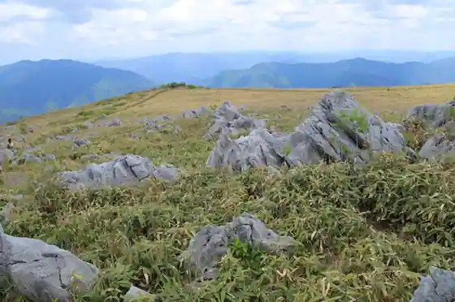
Karusuto Terrace Cafe
イチョウノキ
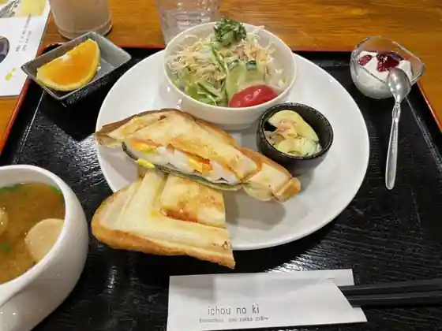
Ichounoki
森の巣箱
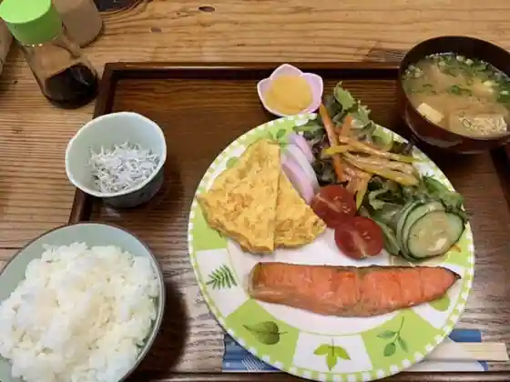
Mori No Subako
風車の駅
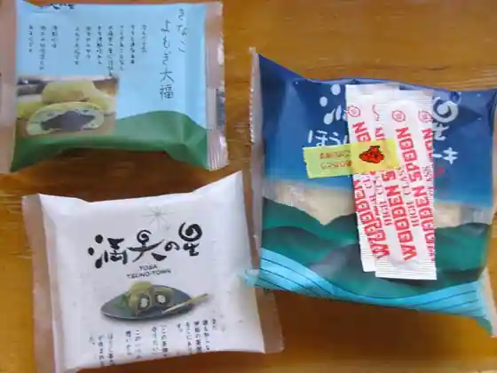
Fusha No Eki
いまはし
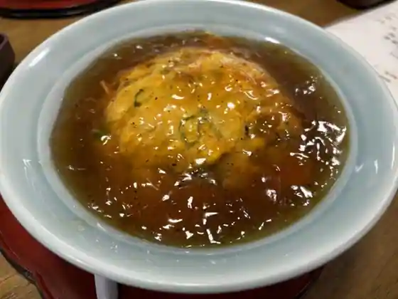
Imahashi
いろは食堂
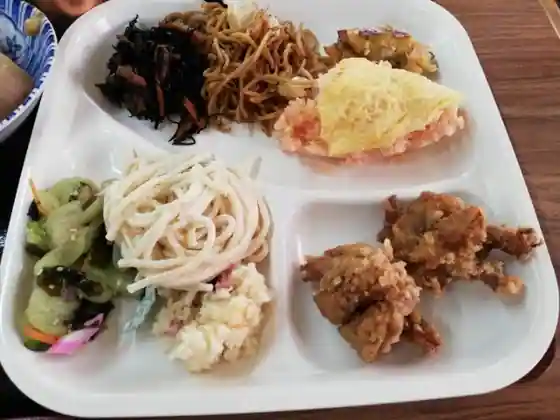
Iroha Shokudo
ブルーメ
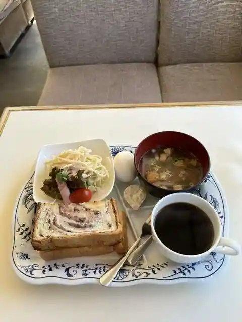
Burume
豚太郎 東津野店
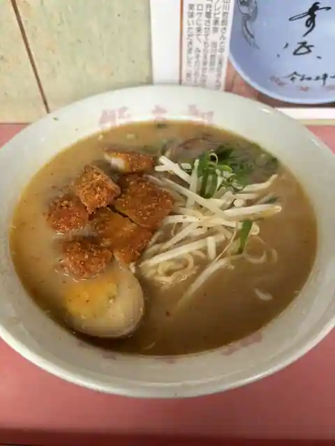
Buta Taro Higashitsuno
コーヒー7不思議
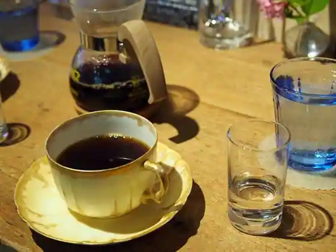
Coffee 7 Fushigi
豚太郎 葉山店
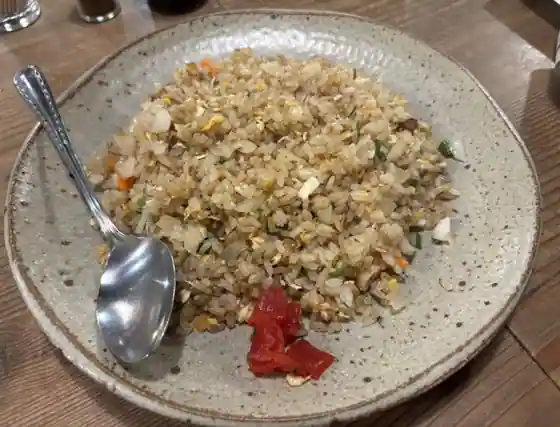
Buta Taro Hayama
つのきん
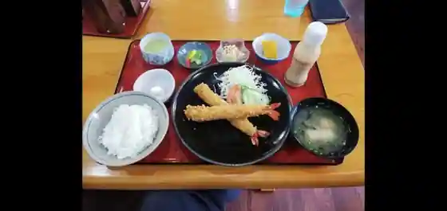
Tsunokin
JACKSONスコーンズ
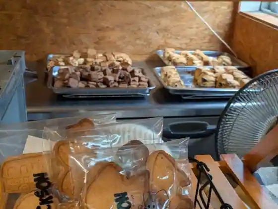
JACKSON Sukonzu
Sights
Shikoku Karusuto
Kaze no Sato Park
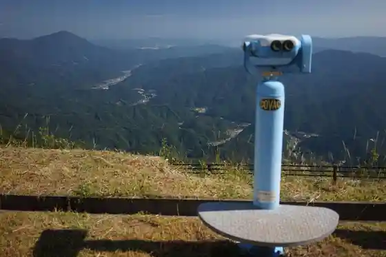
Shimantogawa Genryu Yuki Hi
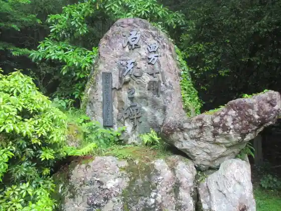
Ari Miya Shrine
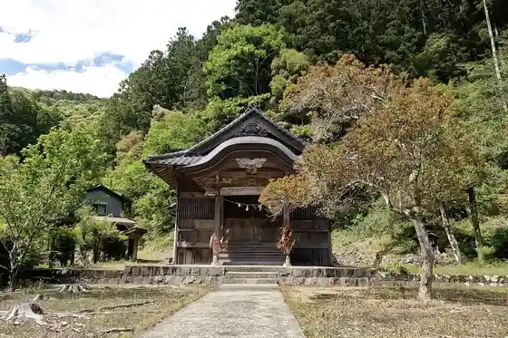
Roadside Station Fusegasaka
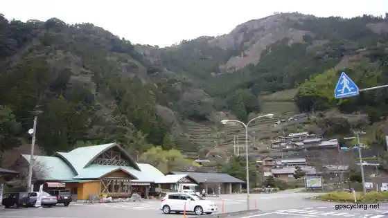
Funyu Yama
Mori no Subako